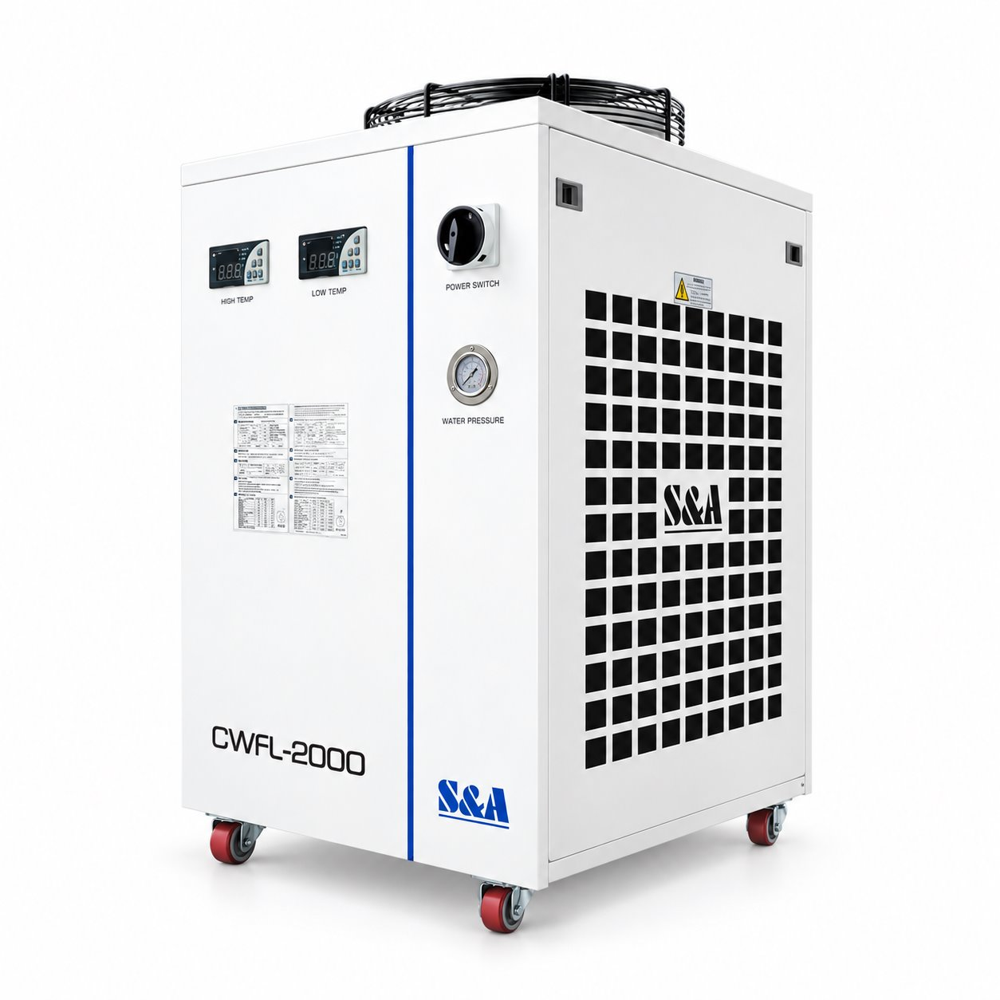

CC002
نام و هویت محصول از فهرست ثبتشدهٔ سهند لیزر نقل شده است. اطلاعات سازنده، گزینههای خانواده و تصویر مرجع به معنی تأیید موجودی یا پیکربندی نصبشده نیست.


Exterior reconstruction compared visually with supplied artwork: two displays, front switch and gauge, right-side grille, upper fan and red wheels agree. No internal assembly claim.
سند تطبیق
اطلاعات ثبتشده و دامنهٔ آن
| برند | TEYU S&A دامنهٔ ثبت: identity · منبع |
|---|---|
| مدل / خانواده | CWFL-2000 دامنهٔ ثبت: identity · منبع |
| ساختار خنککاری سری | دو مدار مستقل برای سورس و اپتیک دامنهٔ ثبت: manufacturer_web · منبع |
| پایداری دمای ANPTY / BNPTY | ±0.5 °C دامنهٔ ثبت: manufacturer_web · منبع |
| برق ANPTY / BNPTY | تکفاز 220–240 VAC؛ 50 / 60 Hz بسته به نسخه دامنهٔ ثبت: manufacturer_web · منبع |
| حجم مخزن ANPTY / BNPTY | 22 L دامنهٔ ثبت: manufacturer_web · منبع |
| ابعاد ANPTY / BNPTY | 70 × 47 × 89 cm؛ طول × عرض × ارتفاع دامنهٔ ثبت: manufacturer_web · منبع |
| وزن خالص ANPTY / BNPTY | 65 / 67 kg؛ مطابق جدول نسخهها دامنهٔ ثبت: manufacturer_web · منبع |
منابع رکورد
- سند هویت و تطبیق رکورد
- TEYU CWFL-2000 ANPTY/BNPTY reference variants, accessed 2026-10-12 — manufacturer_web_variant